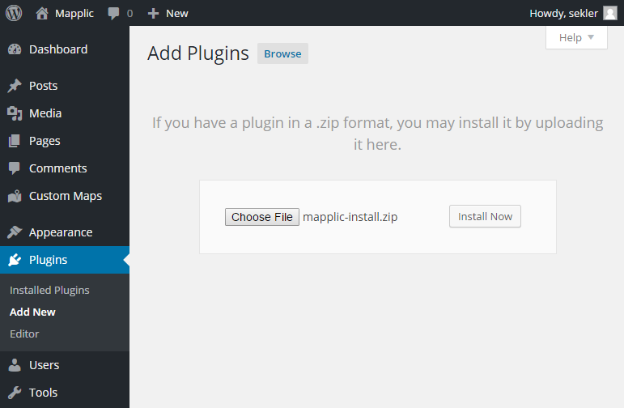
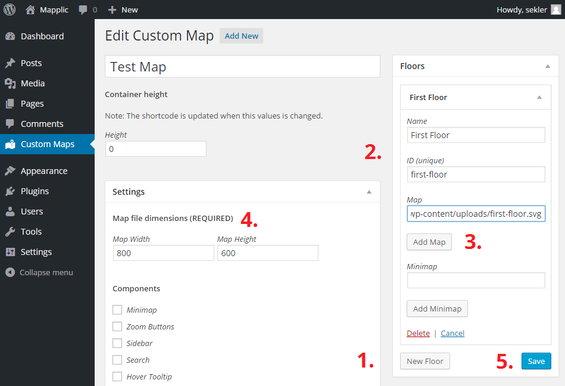
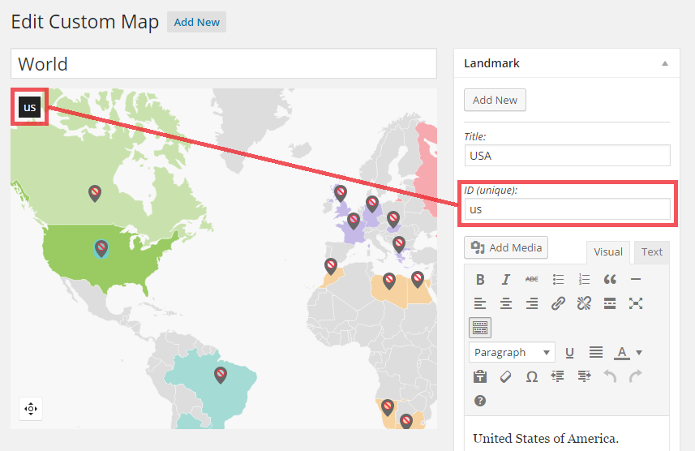
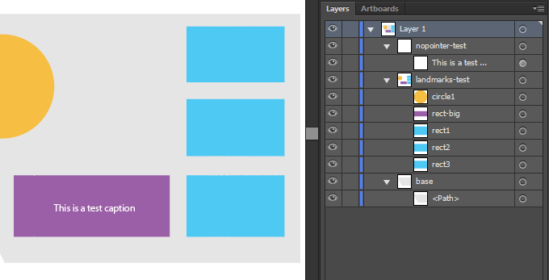
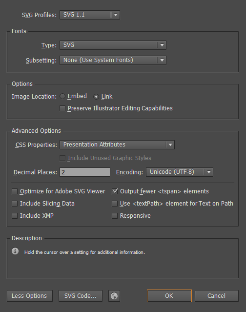

Files
After purchasing Mapplic - Custom Interactive Map WordPress Plugin, a ZIP file can be downloaded from CodeCanyon. This compressed file contains two folders and a zip install file:
docs - documentation, a detailed user guide and an SVG map tutorial on creating Mapplic compatible maps
mapplic - main plugin files with the required libraries, all the built-in and demo maps
mapplic-install.zip - installable WordPress plugin
Update
Mapplic comes with free, lifetime updates. Customers can always download the latest version from the CodeCanyon Downloads Page (must be logged in). We will send out notifications on every major update.
Getting Started
Install
The easiest way to install Mapplic is through the WordPress dashboard.
Log in to your WordPress dashboard and go to Plugins page
Click Add New then Upload Plugin
-
Upload the installable mapplic-install.zip file obtained after unpacking the download package.
 After the installation, activate the plugin and Mapplic will be ready to use.
You can also install the plugin by uploading mapplic folder into your site's wp-content/plugins directory using FTP.
Updating the plugin
Is there an update available? Follow these steps in order to have the latest version of Mapplic running on your WordPress site:
Download the new version from your CodeCanyon Downloads Page (must be logged in) and unpack it.
Log in to your WordPress dashboard and go to Plugins page.
Deactivate the currently active Mapplic plugin and Delete it. Don't worry, your maps and settings won't be deleted, only the plugin files.
Install the new version exactly as installing the plugin the first time. Your map database will remain untouched, however it's advised to create backup before updating.
Keep in mind that plugin core file modifications will be lost on update.
Creating your first map
The plugin comes with three preconfigured example maps (US States, Mall and Apartment). If you are new to Mapplic, the easiest way to get started is by studying these examples and making simple changes to see how the plugin works.
At some point, you will have to create your own map, by click on Add New button (found on every Custom Map page, near the page title). You will be redirected to Add New Custom Map page, where you can give the map a title and choose map type. You have two options:
Built-in Map
Use one of the built-in world/country maps by selecting one from the dropdown list. Currently available maps are:
- World
- Continents
- Europe
- United States (USA)
- Canada
- Australia
- France
- Germany
- United Kingdom (UK)
- Italy
- Netherlands
- Switzerland
- Russia
- China
- Brazil
The new map will be ready to use after clicking on Create Map button, use the shortcode from Custom Maps page to embed a map into a page/post.
If the map you are looking for is not in the above list, you can look for it in our ever growing online map directory. If it's not available, you can create the map yourself. All you need to do is to download an .svg map of the country (Wikipedia is a good resource), make it Mapplic compatible then add it as a Custom map described below.
Custom Map
In order to create a map using your own map images or vector graphics, choose Custom from the dropdown list. After clicking on Create Map, you have to complete the following steps for a working map:
Create a new floor by clicking on New Floor.
Give your floor a Name and a unique, valid ID.
Upload your map file (.jpg, .png and .svg supported) using the Add button.
Fill in the Map file dimensions (REQUIRED) fields with the width and height of your map file (uploaded in the previous step) in pixels.
Click Save and your map is ready be embedded into a page/post, using the shortcode obtained from the Custom Maps page.

Interactive Elements
Also referred to as hoverable parts, active shapes, clickable elements (and many more), interactive element support is undoubtedly the most valuable and unique feature of Mapplic. It consists in making SVG elements clickable and hightlighted on mouse over, so it's only possible with .svg maps.
This simple yet valuable feature often generates confusion amongst users so we will try to solve it in this chapter. The golden rule is:
Create link between shape and landmark through the ID field of the landmark!
Click on any shape on the backend map, and a string will appear on the top left corner inside a dark box. That is the text you have to use as your Landmark's ID in order to make a connection between the shape and landmark. It couldn't be easier!
In order to change the color of an interactive element, use the Fill attribute of the landmark (color picker right below the pin types).
If nothing appears in the top left corner after clicking on a shape, your map is not ready yet, you have to make it Mapplic compatible first.
Import/Export
Now you can easily migrate your maps from one WordPress install to another using the Import/Export feature.
Export
In order to export a map, go to the Custom Interactive Maps list page, and click on the Export button right below the map title. You will be redirected to the Export Map page with the map data, the textarea's content is ready to be imported (see below).
Import
You can import map data on the Add New Custom Map page. Select Import from the dropdown menu and a large input textarea will appear. Paste your map data here and click Create Map.
Map, minimap and other self-hosted image files must be migrated manually!
Options
Mapplic for WordPress allows map editing through its advanced backend interface. The following groups of options/attributes can be edited from the admin panel.
Floors panel
Each map can have unlimited number of floors but it must have at least one. Floors can be reordered by drag&drop.
Name - name/title of the floor, displayed in the level switcher if there's more than one floor.
ID (unique) - valid floor ID that is required and cannot be changed later.
Show by default - check it for the floor you want to be visible when the page loads, has meaning only if there's more than one floor.
Map - path to map file. Files can be directly uploaded using the WordPress media uploader by clicking on Add button.
Minimap - (optional) path to minimap file. Files can be directly uploaded using the WordPress media uploader by clicking on Add button.
Categories panel
Each map can have unlimited number of categories, however categories are optional. Categories can be reordered by drag&drop.
Name - name/title of the category, displayed in the sidebar if enabled.
ID (unique) - valid category ID that is required and cannot be changed later.
Expand by default - check this to have the category expanded by default, leave it unchecked to have it collapsed.
Color - background color of the category in the sidebar.
Landmarks panel
Each map can have unlimited number of landmarks. After clicking the Add button, the new landmark will be added to the center of the map and it can be drag & dropped.
Title - title of the landmark, visible in the hover tooltip, popup and sidebar.
ID (unique) - valid, required landmark ID, used to link SVG shapes with landmarks. It is also used by the deeplinking feature for the URLs.
Description - HTML enabled description of the landmark, displayed in the popup. It can contain links, images, videos or any HTML content.
Geolocation - only visible if the map is geolocation compatible. You can set the Latitude and Longitude, further (drag&drop) positioning is not required (and ignored).
Color and Pin Type - type of the pin. The first in the list is the hidden pin, use it when the landmark is linked with an SVG shape. Use the color picker to color interactive elements. Some of the pins (CSS pins) can also be colored using the color picker.
If the selected pin type supports labels, and additional Label field will appear.
Link - URL associated with the landmark (start with http://). Popup's More button will link to this address, use the Action attribute to change the default behavior.
Category - category of the landmark.
Thumbnail - thumbnail image of the landmark, visible in the sidebar and tooltip.
-
Action - action performed when a landmark is clicked
Default - use the global default action defined on the Settings panel.
Tooltip - open the tooltip with More button redirecting Link.
Open link - opening Link in the same tab.
Open link in new tab - opening Link in new tab.
Lightbox - use the lightbox as popup.
None - do nothing but zoom to the location.
About - short text displayed in the sidebar if enabled.
Zoom Level - zoom level when the landmark is focused.
Settings panel
List of possible map settings:
Map file Dimensions - width and height of your map file in pixels. This field is required!
Minimap - enable/disable the minimap.
Clear Button - enable/disable the clear button.
Zoom Buttons - enable/disable zoom (+/-) buttons.
Sidebar - enable/disable the sidebar.
Search - enable/disable sidebar search (if sidebar is enabled).
Hover Tooltip - enable/disable on hover tooltip, showing the title of locations.
Mouse wheel - enable/disable mousewheel zoom support.
Fullscreen - enable/disable HTML5 fullscreen feature.
Deeplinking - enable/disable deeplinking feature (custom URL for each landmark).
Enable zoom - enable zoom and pan feature.
Map fills the container - map fills the container if checked, otherwise it fits in container.
Alphabetically ordered - have the landmarks ordered alphabetically in sidebar (if sidebar is enabled).
Zoom Limit - zoom-in limit of the map. 1 is the map's actual size. Use 2 for 2x zoom, 3 for 3x etc.
Default Action - default action to perform when a location is focused. Landmarks' Action attribute can override this.
Default Fill Color - default fill color of interactive elements and CSS pins. Landmarks' Fill attribute can override this. Use blank string ('') for no fill.
Geoposition panel
New feature introduced in Mapplic version 4.0, allows using real latitude and longitude coordinates for positioning landmarks. It only works with maps specially created to support this feature (for example Netherlands built-in map). We are constantly adding new maps with geolocation support to our map base.
A map is geolocation compatible if:
Borders of the map file (bottom latitude, left longitude, top latitude and right longitude) are defined here.
The projection of the map is Web Mercator (EPSG:3857), also called Google Web Mercator or WGS 84/Pseudo-Mercator, which is the standard projection for maps on the web.
If the above requirements are met, you can use the Geolocation landmark attributes for positioning. You can easily get the lat/lng coordinates of a place using right-click, "What's here" on Google Maps.
Valid IDs
An ID of floor, category or landmark is valid if:
unique, no duplicates please,
starts with a letter (a-z),
contains only letters (a-z), numbers (0-9), underscore (_) or hyphen (-).
Creating SVG Map
Creating a new map or making an existing one compatible with Mapplic requires a few simple steps. It's nothing more than simple naming and grouping convetions.
We are using Adobe Illustrator CC in this tutorial, however older versions of Illustrator can also be used. Inkscape is a free alternative for creating vector graphics, but due to its popularity, the steps are presented in Adobe Illustrator.
Walkthrough
The above video is a walkthrough of creating a simple SVG maps with interactive elements. In the next section each step is explained in detail.
1 Creating New Document
Open Illustrator and create a New Document. Give your document a name, make sure the Units are set to Pixels and choose the desired dimensions (width and height).

Press OK, and an empty, white canvas will appear.
2 Drawing the map
The next step would be the actual drawing of the map. You can always add or edit content, so if it's your first time creating a map, experiment with a few simple shapes, you can add complex drawings later.
Either you've drawn a new map or trying to make an existing one Mapplic compatible, continue from here.
The correct grouping and naming of the SVG elements is very important, it is used by the plugin to identify elements with different behavior (for example the interactive elements of the map). For creating groups and naming elements use the Layers tool (F7). There are three types of elements:
Common elements (environment)
The first type is the common elements. These will be the elements on the map without interactivity. You are free to draw all kinds of shapes or add images without any naming or grouping conventions. In general the environment is non interactive so we're using common elements. On the walkthrough video this would be the base.
Interactive elements (landmarks)
We will refer to the interactive elements of the map as "landmarks". Every named, direct child of a group having a name starting with landmarks is considered a landmark. So create interactive elements as follows.
-
Create a new group. The name of the group MUST start with "landmarks" and cannot contain spaces.
Correct: landmarks-test, landmarks-deparment-shops, landmarks-lots
Incorrect: landmark, test_landmarks, lndmarklots
-
Select the shapes you want to make interactive and move them to the first level of the newly created group, make sure there are no nested groups.
-
Name each landmark with a unique identifier. The names cannot contain spaces! When you will be creating landmarks on WordPress backend, you will have to use the same ID for the landmark. The landmark and the SVG shape are connected through this ID so make sure it's UNIQUE!
Nopointer elements (logos/captions)
Sometimes an overlaying element might block the interactivity, for example logos or captions over a landmark. This is where nopointer elements come handy. If an element's or its parent's (direct or indirect) name starts with nopointer, it will be ignored by the mouse pointer.
3 Saving the Map
To save your map as .svg, use the File > Save As option, select the type SVG (*.SVG).
It is advised to:
set at least 2 for the decimal places.
link images (if there is any) instad of embedding.
use Presentation Attributes for CSS Properties if the map has more floors.
With some basic Illustrator skills, anyone can create a Mapplic compatible interactive vector map within minutes. If you have any further questions please get in touch using this contact form.
Customization
In some cases your project might require changes not possible through simple options. In the following, we will go through a few commonly requested modifications. If you need further customization, feel free to get in touch, we are available for custom work.
There are three files you might need to edit: js/mapplic.js, css/mapplic.css and css/map.css. To make your CSS changes future proof, it's strongly advised to write the changes in css/map.css, even if the selector already exists.
Custom pins
Mapplic comes with a few built-in pins, however you can easily add your own pin types, as much as you want.
-
Open wp-content/plugins/mapplic/css/map.css file and find the selector .mapplic-pin.my-new-pin. Duplicate it and replace 'my-new-pin' with the name of your pin, customize the attributes (background-image, width, height, margin-top, margin-left).
/* CUSTOM PINS */ .mapplic-pin.my-new-pin { background-image: url(../images/my-new-pin.png); width: 20px; height: 30px; margin-top: -15px; margin-left: -10px; }Negative margins are used for defining the pin's origin point.
-
Now you have to register the new custom pin types to appear on Mapplic backend. The following code has to be called somewhere in the project, preferably in your theme's functions.php to make the changes future proof.
/* Mapplic Custom Pins */ function mapplic_extend_pins($pins) { // New pin types $custom = array('my-new-pin', 'my-new-pin2'); // Merging arrays $pins = array_merge($pins, $custom); return $pins; } add_filter('mapplic_pins', 'mapplic_extend_pins');
Resizing the Minimap
By default, the minimap has a width of 140 pixels. To resize it, we have to alter the width, the height will be adjusted automatically maintaining the aspect ratio. It can be resized using the following style:
.mapplic-minimap {
width: 200px;
}
Relocating Components
You might want to relocate the UI elements over the map (minimap, level switcher, clear button, fullscreen button, zoom buttons). Use the top/right/bottom/left attributes to move them. For example, if we wanted to move the level switcher to the top-left corner:
.mapplic-levels {
top: 0;
left: 0;
}
Making the link open in a new Tab/Window
Use text editor's search feature to find the first line, and replace it with the second:
// find this:
this.link = $('<a>' + mapplic_localization.more_button + '</a>').addClass('mapplic-tooltip-link').attr('href', '#').hide().appendTo(this.el);
// replace with this:
this.link = $('<a>' + mapplic_localization.more_button + '</a>').addClass('mapplic-tooltip-link').attr('href', '#').attr('target', '_blank').hide().appendTo(this.el);
API
Since version 4.0 Mapplic comes with a list of public methods and events to provide even more flexibility. Using the API is highly advised for future-proof plugin modifications, you can avoid losing changes when updating to a new version.
Events
Events can be bound to initialized Mapplic instances. List of public events currently available:
mapready - the maps is fully loaded
locationopened - a location is focused
locationclosed - a location is closed
levelswitched - the active level is switched
positionchanged - map movement performed (zoom or pan)
$(document).ready(function() {
// #mapplic1 selector saved in map variable,
// always the first Mapplic instance on the page
var map = $('#mapplic1');
// EXAMPLES
// Map ready
map.on('mapready', function(e, self) {
console.log('Map is ready!')
// self grants direct access to the map object,
// be focused on the washing machine by default
self.moveTo(0.67, 0.62, 3, 0);
});
// Location opened
map.on('locationopened', function(e, location) {
// location grants full access to the location
console.log(location.title + ' opened.');
});
// Location closed
map.on('locationclosed', function(e) {
console.log('Location closed.');
});
// Level switched
map.on('levelswitched', function(e, level) {
console.log('Switched to ' + level + ' level.');
});
// Position changed
map.on('positionchanged', function(e, self) {
// self grants direct access to the map object
console.log('Pan/zoom, current scale: ' + self.scale);
});
});Methods
Metods are public function performing basic tasks. You can call them using the map object which can be accessed by calling .data('mapplic') on the selector. The map object also grants access to components and other variables. Currently supported public methods are:
switchLevel(target) - switch to level with ID target
moveTo(x, y, s, d) - move to position x, y on scale s in d milliseconds
getLocationData(id) - get the data object of location
showLocation(id, d) - focus to location in d milliseconds
hideLocation() - close currently active location
updateLocation(id) - update location on the map
$(document).ready(function() {
// #mapplic1 selector saved in map variable,
// always the first Mapplic instance on the page
var map = $('#mapplic1');
// Access to map object from selector
var self = map.data('mapplic');
// EXAMPLE 1
// Showing visitor's geolocation
map.on('mapready', function(e, self) {
// Update location with geoposition
if (navigator.geolocation) {
navigator.geolocation.getCurrentPosition(function(pos) {
var location = self.getLocationData('pos');
location.lat = pos.coords.latitude;
location.lng = pos.coords.longitude;
self.updateLocation('pos');
});
}
else console.log('Geolocation not enabled.');
});
// EXAMPLE 2
// Switch level from external button
$(document).on('click', '#goto-level1-button', function(e) {
e.preventDefault();
self.switchLevel('level1');
});
});Others
Thank you for reading the docs carefully. In case you found anything wrong or incomplete please let us know. We are working hard to provide an affordable, premium quality custom map solution.

If you like the plugin please consider rating it with 5 stars on CodeCanyon.
Credits
jQuery Library
jQuery Mouse Wheel Plugin - mousewheel
Hammer.js - pinch zoom
Magnific Popup - lightbox
Changelog
Version 4.0.1 - July 5th, 2016
- IE9 bug fix - empty desc bug fix
Version 4.0 - June 10th, 2016
- IMPORT/EXPORT tool - GEOLOCATION feature - LIGHTBOX support - API with basic methods and events - new built in map: The Netherlands - Future proof custom pins - backend UI optimization - maps per page increased - improved responsive behavior - pin label support - new pin types - landmark About attribute - tooltip with thumnail - default fill color and default action - mousewheel setting - css and javascript optimizations - hammer.js updated to version 2.0.6
Version 3.1 - July 7th, 2015
- SMART TOOLTIP - tooltip now repositions itself and it's always visible - 7 new built in maps: Continents, Australia, Italy, Switzerland, Russia, China, Brazil - thumbnail support - docs rewritten from scratch - edit map button - fixed container width removed - duplicate feature - possibility to link floors - tooltip scroll bug fixed - small CSS fixes
Version 3.0 - February 20th, 2015
- 7 built in maps: World, Europe, USA, Canada, France, Germany, England - new generation of interactive SVG maps (old method still supported) - deeplinking engine rewritten (hash > query parameter) - zoom buttons (+/-) added - map in container: fit or fill - mobile optimiztaion - retina support - hammer.js updated to version 2.0.4 - new pin types added - drag&drop fix: now clickable areas can be dragged as well without activating them - small design changes - landmark list alphabetic order - colorable landmarks (svg) - landmark actions (tooltip/redirect) - zooming can be disabled - small bug fixes
Version 2.0.1 - August 2nd, 2014
- text tab added to description editor - fullscreen bug fixed - IE9 tooltip close/clear button bug fixed - pin animation setting added - input focusing issues in Mozilla fixed
Version 2.0 - July 17th, 2014
- PINCH ZOOM added for touch devices - hybrid mode added (now you can have clickable shapes and pins on the same map) - developer mode added (easy to find x/y coordinates) - tooltip rewritten to support any data (ex. youtube videos) - tooltip dynamic width - tooltip dynamic height (with scrollbar if needed) - smart tooltip positioning - fullscreen button added - search feature improved - SVG tutorial included - hover tooltip added - pin animations added - ajax preloader added - new flat design - source code improved and greatly optimized - description field rich editor added - comes with three example maps - multisite bug fixed - field validations improved - landmark list visible on backed